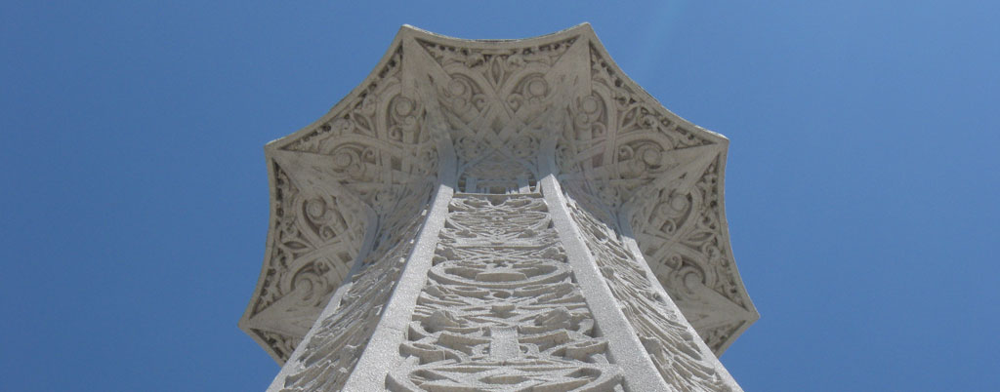
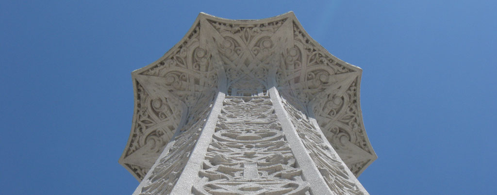

Fox Valley Bahá'ís


 


This is the Day in which God's most excellent favours have been poured out upon men, the day in which His mighty grace hath been infused into all created things.
What is the Bahá'í faith?
The Bahá’í Faith is the youngest of the world’s independent monotheistic religions. Founded in Iran in 1844, it now has more than seven million adherents in 236 countries and territories. Bahá’ís come from nearly every national, ethnic and religious background, making the Baha’i Faith the second-most-widespread religion in the world.
Interested in the Bahá'í faith?
Learn MoreDevotional Gatherings
The Bahá’í teachings prescribe daily prayer and intimate communion with God as the foundation for a life devoted to spiritual advancement and service to humanity. Devotional gatherings take place in many neighborhoods throughout the Fox Valley. To find one near you please check the Calendar or Contact Us and we can let you know the location and dates of a devotional gathering closest to you.
In addition to practicing private prayer and meditation, Bahá’ís gather in their homes and communities for collective worship. Devotional gatherings are scheduled regularly to share a devotional spirit of joy, love and fellowship. Readings are taken from the Baha’i writings and the scriptures of Christianity, Islam, Judaism, Hinduism, Zoroastrianism and Buddhism. Participants are encouraged to bring their prayer books or favorite passages from the scriptures to share. These gatherings often offer prayers for healing or assistance to those in need. Musical selections are diverse, coming from a variety of cultures and styles. There is no established ritual and no solicitation of funds. Light refreshments are often served.
Study Circles for Adults
Study circles are regular gatherings of people interested in an in-depth and systematic study of the Baha’i Writings. The purpose of this study is to gain a deeper understanding of the Holy Word, to comprehend its meanings and to find ways to apply the Word to our lives through spiritual transformation and service to humanity. The frequency and duration of each study circle are set by the group, and a facilitator serves to maintain the focus and pace. Every participant in the group also makes a commitment to action or service.
Study circles are not restricted to Bahá’ís; anyone may attend.
To find a study circle near you, please fill out the Contact Us form and we will let you know when our next classes are forming.
Classes for Children and Youth
The Bahá’ís of Fond du Lac, Oshkosh and Appleton are dedicated to fostering the moral and spiritual development of children and youth in the Fox Valley through a series of regular classes held in each city.
The children’s classes encourage children to recognize their own nobility and the inherent nobility of their classmates. The children acquire knowledge and spiritual capacities which they can integrate into their everyday lives.
Youth are encouraged to develop a strong sense of purpose, empowering their own transformation and leading them to contribute to the advancement of society. Young people’s spiritual capacity, the basis for their own happiness and sense of well-being, is a powerful force for social change.
Community Service
For Bahá’ís, service to others gives life meaning and purpose. Any work or profession carried out in a spirit of service to humanity is considered the highest form of worship. Educating one's children and caring for one's family also are considered laudable forms of service and worship.